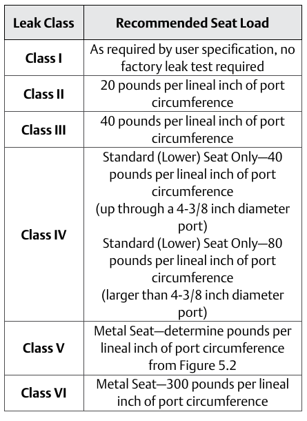

Recommended Seat Load by Class — Figure 5.4

- 1Class II — 20 lbf per lineal inch
- 2Class III, standard seat — 40
- 3Class IV, standard seat, above a 4-3/8 in. port — 80
- 4Class VI, metal seat — 300
- 5Class V — no flat number; the table's own row instructs "determine from Figure 5.2," because Class V's real seat load depends on the valve's own unbalance area
After Control Valve Handbook, 6th ed., Fig. 5.4 — used directly. Component Index: cvh-cmp-recommended-seat-load-table.